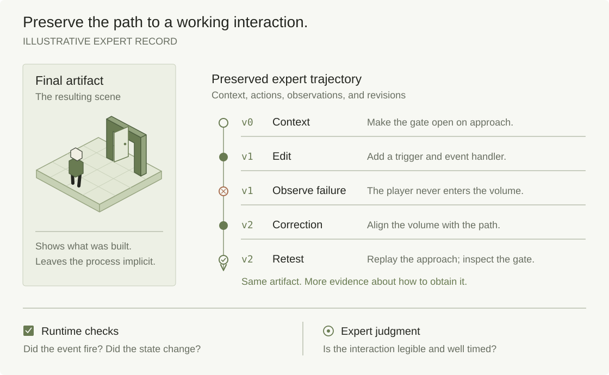

Research perspective / Interactive intelligence
The gap between code
and a working world.
Why reliable AI for interactive 3D environments needs the evidence behind expert decisions—and why we’re building the data to capture it.

Ask an AI assistant to make a door open when a player approaches. A plausible script is easy to recognize. A working interaction takes more evidence.
The assistant must find the right door, understand its existing components, choose where the behavior should run, and preserve the rest of the experience. The door might animate correctly on one screen while remaining closed for another player. A collision volume might block the opening. A second activation might interrupt the first. None of those failures is resolved by a confident explanation of the code.
This is the problem that interests us at World Labs: how to help models build and improve games when success depends on what happens after an action. Our starting point is expert gaming data—task briefs, demonstrations, critiques, comparisons, and revisions connected to the artifacts and observations that make them meaningful.
What OpenGameEval actually shows
Roblox’s December 2025 introduction of OpenGameEval describes a useful distinction: models often succeed at isolated object edits but struggle when a task requires locating relevant objects, coordinating scripts, and accounting for an existing experience. Its initial benchmark contained 47 human-reviewed tasks, evaluated inside Roblox Studio. [1]
The task set has since expanded. The repository’s release log records 40 additions in April 2026, bringing the main suite to 87 evaluations. The chart below uses the expanded suite from a pinned June 10, 2026 repository snapshot; it does not mix those results with the original 47-task set. [2]
Task completion remains uneven
OpenGameEval · 87-task expanded set · June 10, 2026 snapshot
View exact values and metric definitions
| Model | Pass@1 | Pass@5 |
|---|---|---|
| Claude Fable 5 | 50.34% | 62.07% |
| Claude Opus 4.6 | 48.05% | 59.77% |
| Gemini 3.5 Flash | 48.05% | 63.22% |
| Gemini 3 Flash Preview | 47.82% | 60.92% |
| Claude Opus 4.7 | 43.45% | 58.62% |
| GPT-5.5 (Reasoning: M) | 40.69% | 56.32% |
| GPT-5.4 (Reasoning: M) | 40.23% | 55.17% |
Pass@1: estimated success on one attempt. Pass@5: estimated success at least once across five attempts. The original 47-task suite and the separate debugging suite are excluded. Model names follow the source.
The strongest listed Pass@1 is 50.34%; the strongest Pass@5 is 63.22%, achieved by a different model. Here, Pass@1 estimates success on one attempt, while Pass@5 estimates at least one success within five attempts. More chances can raise coverage without making any one attempt dependable. [3]
A benchmark pass requires all of the task’s checks to pass. That is a valuable standard for a specified behavior, but it still measures the checks the authors wrote. A passing task is not evidence that every aspect of the resulting game is correct or enjoyable. The framework makes these checks inspectable in its open-source repository. [4]
What does a benchmark task look like?
These are concrete requests to change a Roblox experience. Pass@1 and Pass@5 summarize success on the same tasks at different attempt counts; they are not different types of assignment. The examples below come from the same repository snapshot as the chart.
| Example task | Requested behavior |
|---|---|
| Health regeneration | In an existing laser-tag game, begin restoring health two seconds after damage, at a rate of 10 health per second. |
| Traffic lights | Script a four-way traffic light using the objects already in the scene. |
| Timed sprint | Holding Left Shift adds 20 to the player’s movement speed; after five seconds, speed returns to normal. |
| Platform checkpoint | Turn the selected platform into a checkpoint. Once a player touches it, they should respawn nearby after dying. |
| Friendly fire | Change an existing laser-tag game so players can damage members of their own team. |
| Race-car recovery | Detect an upside-down car or a car that has been off-track for five seconds, then return the car and its player to the track’s starting position. |
The checkpoint task shows what verification means in practice. Its test kills and respawns the character before and after touching the platform. It checks that the original spawn still works before activation and that the player appears near the checkpoint afterward. The friendly-fire test puts two players on the same team and checks that every tested blaster damages the teammate. These checks exercise the resulting game, rather than just inspecting whether the model wrote plausible code.
Scope matters. These are Roblox Studio development-assistant results under a particular harness. They are not a measure of all 3D intelligence, a head-to-head comparison of embodied agents, or a World Labs experiment. Tool access, prompts, execution budgets, and test coverage can affect the outcome. We read the table as evidence of unfinished work, not a universal ranking of model ability.
The world changes the task
In an interactive environment, the same instruction can require different actions depending on what already exists. “Open the door” could mean moving a part, changing a constraint, dispatching an event, or calling an existing system. A correct solution depends on context that may be spread across a scene hierarchy, scripts, runtime state, and multiple clients.
We find it useful to separate three demands. Grounding connects a request to the right objects and state. Coordination makes the change work across the systems it touches. Verification checks whether the intended behavior actually occurred. Better code generation helps, but the whole task can fail at any of these steps.
A simple model of interaction · conceptual, not a measured result
Here, s is the environment state, a is an action, and P describes how the world changes. The agent receives observations of that state; it may need tools or interaction to discover what it cannot yet see.
This framing makes a practical point: an action is a hypothesis about what the world will do next. Moving a trigger, rewriting a handler, or changing a movement parameter should produce an observable consequence. A useful training record connects the hypothesis to that consequence.
It also clarifies the difference between two related problems. An agent playing a game chooses actions within its rules. An agent building a game changes some of those rules and then checks their effects. Both need feedback; their action spaces, observations, and success conditions differ. Evidence from one can motivate ideas for the other without establishing equivalent performance.
Recovery is part of the skill
A clean demonstration usually shows an expert following a successful route. A deployed model also needs to handle states created by its own mistakes: a duplicated handler, an object moved into an unexpected parent, or a mechanic that partially works. Those situations can call for a different kind of supervision.
DAgger formalizes a related issue in imitation learning: a learner’s actions influence the states it encounters, so training on expert demonstrations alone can create a mismatch with deployment. Its procedure gathers states visited by the learner, requests expert actions, and iteratively aggregates data. [10]
When the state distributions differ
dπ describes states encountered by the agent; dπ⋆ describes those encountered by the expert. They need not match. A learner must recover in situations a polished expert demonstration may never visit.
For our proposed collection process, the implication is to keep some failed attempts and the expert corrections that follow them. The valuable intervention may be “inspect the server state before changing the animation,” or “reproduce the failure with a second player.” These are observable decisions that can be recorded alongside their evidence.
This is an application of the idea, not a claim to inherit DAgger’s theoretical guarantees. Whether critique, demonstrations, or interventions help depends on the learner, coverage, and training procedure. We want to test which records make recovery more reliable.
Make the development record the unit of data
World Labs is developing a community of game specialists and a workflow for turning their work into data. The aim is to connect a brief to an implementation, its observed behavior, the expert judgment, and the revision that follows. A final artifact remains useful; the path to it can reveal decisions that the artifact alone leaves ambiguous.


Our proposed data unit
A goal g; an initial context record x0; an observation-and-action trace τ; expert critique c; a revision Δ; and verification evidence V. The context record includes available artifacts and observations, without assuming access to every hidden state.
In practice, this would include the engine version, relevant assets and code, task constraints, permitted tool actions, artifact versions, and links to the evidence reviewed. Explanations would be expert-authored accounts of specific decisions. We would preserve disagreements and uncertainty instead of forcing every example into a confident label.
Illustrative collection example / Not a reported experiment
A door that works for both players
Brief: Open a shared door on approach, preserve collision rules, and keep its state consistent for two players.
Observed failure: The first implementation animates the door for the triggering client; the other player still encounters a closed door.
Expert intervention: Compare the server and both client states, identify where the update originates, and revise ownership of the shared state.
Retest: Repeat from both players’ positions, try overlapping activations, check collision during the transition, and rerun previously passing behavior checks.
That record offers several potential learning targets. A demonstration can supervise an action sequence. A critique can train diagnosis. A before-and-after pair can supervise revision. A comparison can express a preference under a shared brief. A test result can support evaluation or, if validated for that purpose, a reward signal. These formats serve different learning procedures; we would choose them with the team using the data.
The expert’s specialty matters too. A networked-systems developer, a level designer, and a combat designer may notice different failures in the same artifact. Matching the assignment to the discipline helps make the explanation useful rather than merely fluent.
A working mechanic is only one layer of a good game
Some requirements have clear executable tests. Others depend on an intended audience, genre, or design goal. We want to keep these types of evidence distinguishable so a model can learn what a judgment actually supports.
| Signal | Question it can address | Evidence to preserve |
|---|---|---|
| Executable checks | Does the mechanic meet a specified requirement? | Inputs, assertions, engine version, logs, and reproducible runs. |
| Expert review | Does the design support the intended experience? | Brief, rubric, artifact version, rationale, disagreement, and confidence. |
| Observed play | What happened for these players under these conditions? | Task, sample, protocol, permitted telemetry, and outcome definitions. |
A combat sequence can satisfy every damage rule while communicating the threat poorly. A puzzle can be solvable while giving players no reasonable way to discover its logic. These are opportunities for expert diagnosis, but an expert preference is still a judgment under stated criteria. It does not by itself establish enjoyment or retention.
Similarly, a higher completion rate might indicate clearer onboarding, lower difficulty, or a different player sample. To interpret it, we need the task, population, and conditions attached. For some assignments, a short playtest can answer the question; for others, it cannot. “Insufficient evidence” should be an available result.
This is why we would resist collapsing all feedback into one score too early. Correctness, design intent, and observed behavior can disagree in informative ways. Preserving those differences may be more useful than producing an apparently precise number.
How we would test whether this data helps
The important question is whether the records change model behavior on work they have not seen. Our initial experiments should be small enough to audit and controlled enough to distinguish a useful signal from additional training volume.
- Choose a bounded capability. Start with a specific family of tasks, such as repairing a shared mechanic in an existing Roblox experience. Define the available tools, time budget, and success conditions before collecting examples.
- Compare what the data contains. For a compatible learning setup, compare demonstrations alone, demonstrations with critique, critique with revisions, and full records with playtest evidence. Run both matched-volume and matched-collection-cost comparisons where feasible; richer records can be more expensive.
- Hold out meaningful variation. Separate projects and related artifacts across training and evaluation. Test unfamiliar object hierarchies, starting states, and task families. Keep public benchmark examples out of the training collection used to claim gains on that benchmark.
- Measure completion and recovery. Report first-attempt success, success within a fixed budget, recovery from an introduced failure, regressions, expert intervention time, and cost per completed task. Use blinded expert judgments for design criteria and report those separately from executable checks.
- Make the comparison inspectable. Record model and harness versions, tool access, seeds, budgets, graders, and exclusions. Report uncertainty across tasks and repeated runs. Investigate improvements that disappear when the environment or reviewer changes.
A useful negative result would also change our direction. If critiques improve explanations without improving task completion, they are not yet delivering the intended value. If revisions help only on near-duplicate scenes, we need broader coverage or a different learning procedure. If a tool or grader change explains the gain, we should attribute it accordingly.
Collection quality is part of that experiment. We would calibrate reviewers on shared examples, independently review a sample, and check that rationales point to actual evidence. Capture, reuse, and training rights would be agreed for each project, including any player telemetry. The goal is a dataset whose scope and limitations a buyer can inspect.
Better games need better feedback
If generation becomes faster while verification remains expensive, creators inherit a growing queue of things that look plausible and still need to be tested. Helping a model inspect, diagnose, and revise its own work could make the difference between a compelling prototype and a tool a creator can rely on.
Games give us a concrete place to study that difference. They bring together spatial structure, code, time, input, shared state, and human interpretation. Within a scoped project, we can preserve the starting context, observe a failure, commission a correction, and test the result. That makes game development a useful setting for studying interactive reliability on its own terms; transfer to robotics or other domains would require separate evidence.
The data worth capturing is the connection between a decision and what happened when someone played.
World Labs’ contribution we want to build is the expert community and collection process that makes those connections usable: precise tasks, versioned artifacts, informed critiques, and evidence of improvement. Better models, better tools, automated feedback, and expert data can all contribute. Our job is to find where specialized human knowledge adds measurable value.
Where we are today. First projects are in development. This article sets out our research direction; it reports no World Labs training results. Instrumented capture, a public evaluation API, validated benchmarks, and RL environments are future capabilities described in our development approach.
Sources & notes
Primary sources checked September 23, 2026. Benchmark values are reproduced from the pinned repository snapshot below, not from a new evaluation run. Figures 1 and 3 are original conceptual diagrams; Figure 2 visualizes Roblox’s published results. The task examples link directly to their prompts and evaluation code in the same repository snapshot.
- Zhang, Ayyar, Sun & Gong. Using OpenGameEval to Benchmark Agentic AI Assistants for Roblox Studio.Roblox, December 17, 2025. Launch scope and qualitative findings.
- Roblox. OpenGameEval release log.Expanded suite: 47 initial tasks plus 40 additions on April 14, 2026. Pinned repository snapshot.
- Roblox. LLM Leaderboard on Roblox Studio Assistant.June 10, 2026 snapshot, commit 9ba3f07. Expanded-set scores and metric definitions. No cross-version trend is inferred.
- Roblox. OpenGameEval framework and evaluation contract.A pass requires all checks to pass. Open-source evaluation tools and setup documentation.
- SIMA Team et al. Scaling Instructable Agents Across Many Simulated Worlds.2024. Language-conditioned agents acting through visual observations and keyboard/mouse control.
- Google DeepMind. SIMA 2: An agent that plays, reasons, and learns with you in virtual 3D worlds.November 13, 2025. Reported advances, learning approach, and remaining limitations; technical report linked from the post.
- Wang et al. Voyager: An Open-Ended Embodied Agent with Large Language Models.2023. Executable skills, iterative prompting, and environment feedback in Minecraft.
- Fan et al. MineDojo: Building Open-Ended Embodied Agents with Internet-Scale Knowledge.NeurIPS 2022. Minecraft tasks, internet knowledge, and a learned reward model.
- Xie et al. OSWorld: Benchmarking Multimodal Agents for Open-Ended Tasks in Real Computer Environments.2024. Initial-state setup and execution-based evaluation for computer-use tasks.
- Ross, Gordon & Bagnell. A Reduction of Imitation Learning and Structured Prediction to No-Regret Online Learning.AISTATS 2011. DAgger and the state-distribution problem in sequential prediction.